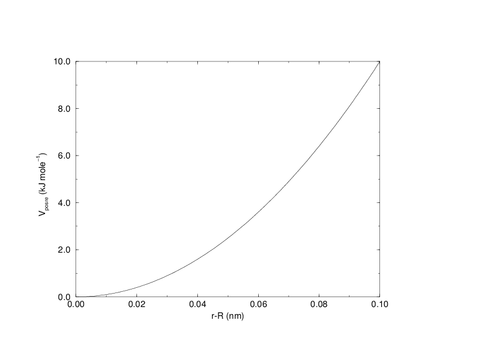
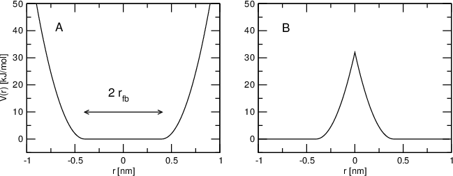
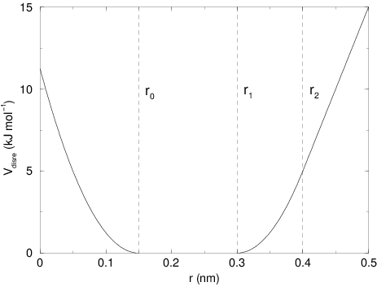

Restraints¶
Special potentials are used for imposing restraints on the motion of the system, either to avoid disastrous deviations, or to include knowledge from experimental data. In either case they are not really part of the force field and the reliability of the parameters is not important. The potential forms, as implemented in GROMACS, are mentioned just for the sake of completeness. Restraints and constraints refer to quite different algorithms in GROMACS.
Position restraints¶
These are used to restrain particles to fixed reference positions \(\mathbf{R}_i\). They can be used during equilibration in order to avoid drastic rearrangements of critical parts (e.g. to restrain motion in a protein that is subjected to large solvent forces when the solvent is not yet equilibrated). Another application is the restraining of particles in a shell around a region that is simulated in detail, while the shell is only approximated because it lacks proper interaction from missing particles outside the shell. Restraining will then maintain the integrity of the inner part. For spherical shells, it is a wise procedure to make the force constant depend on the radius, increasing from zero at the inner boundary to a large value at the outer boundary. This feature has not, however, been implemented in GROMACS.
The following form is used:
The potential is plotted in Fig. 29.


Fig. 29 Position restraint potential.¶
The potential form can be rewritten without loss of generality as:
Now the forces are:
Using three different force constants the position restraints can be turned on or off in each spatial dimension; this means that atoms can be harmonically restrained to a plane or a line. Position restraints are applied to a special fixed list of atoms. Such a list is usually generated by the pdb2gmx program.
Note that position restraints make the potential dependent on absolute
coordinates in space. Therefore, in general the pressure (and virial)
is not well defined, as the pressure is the derivative of the free-energy
of the system with respect to the volume. When the reference coordinates
are scaled along with the system, which can be selected with the mdp option
refcoord-scaling=all, the pressure and virial are well defined.
Flat-bottomed position restraints¶
Flat-bottomed position restraints can be used to restrain particles to part of the simulation volume. No force acts on the restrained particle within the flat-bottomed region of the potential, however a harmonic force acts to move the particle to the flat-bottomed region if it is outside it. It is possible to apply normal and flat-bottomed position restraints on the same particle (however, only with the same reference position \(\mathbf{R}_i\)). The following general potential is used (Figure 30 A):
where \(\mathbf{R}_i\) is the reference position, \(r_\mathrm{fb}\) is the distance from the center with a flat potential, \(k_\mathrm{fb}\) the force constant, and \(H\) is the Heaviside step function. The distance \(d_g(\mathbf{r}_i;\mathbf{R}_i)\) from the reference position depends on the geometry \(g\) of the flat-bottomed potential.


Fig. 30 Flat-bottomed position restraint potential. (A) Not inverted, (B) inverted.¶
(211)¶\[d_g(\mathbf{r}_i;\mathbf{R}_i) = | \mathbf{r}_i-\mathbf{R}_i |\]
(212)¶\[d_g(\mathbf{r}_i;\mathbf{R}_i) = \sqrt{ (x_i-X_i)^2 + (y_i - Y_i)^2 }\]
(213)¶\[d_g(\mathbf{r}_i;\mathbf{R}_i) = |x_i-X_i|, \;\;\;\mbox{or}\;\;\; d_g(\mathbf{r}_i;\mathbf{R}_i) = |y_i-Y_i|, \;\;\;\mbox{or}\;\;\; d_g(\mathbf{r}_i;\mathbf{R}_i) = |z_i-Z_i|.\]
It is possible to apply multiple independent flat-bottomed position restraints of different geometry on one particle. For example, applying a cylinder and a layer in \(z\) keeps a particle within a disk. Applying three layers in \(x\), \(y\), and \(z\) keeps the particle within a cuboid.
In addition, it is possible to invert the restrained region with the unrestrained region, leading to a potential that acts to keep the particle outside of the volume defined by \(\mathbf{R}_i\), \(g\), and \(r_\mathrm{fb}\). That feature is switched on by defining a negative \(r_\mathrm{fb}\) in the topology. The following potential is used (Figure 30 B):
Angle restraints¶
These are used to restrain the angle between two pairs of particles or between one pair of particles and the \(z\)-axis. The functional form is similar to that of a proper dihedral. For two pairs of atoms:
For one pair of atoms and the \(z\)-axis:
A multiplicity (\(n\)) of 2 is useful when you do not want to distinguish between parallel and anti-parallel vectors. The equilibrium angle \(\theta\) should be between 0 and 180 degrees for multiplicity 1 and between 0 and 90 degrees for multiplicity 2.
Dihedral restraints¶
These are used to restrain the dihedral angle \(\phi\) defined by four particles as in an improper dihedral (sec. Improper dihedrals) but with a slightly modified potential. Using:
where \(\phi_0\) is the reference angle, the potential is defined as:
where \(\Delta\phi\) is a user defined angle and \(k_{dihr}\) is the force constant. Note that in the input in topology files, angles are given in degrees and force constants in kJ/mol/rad\(^2\).
Distance restraints¶
Distance restraints add a penalty to the potential when the distance between specified pairs of atoms exceeds a threshold value. They are normally used to impose experimental restraints from, for instance, experiments in nuclear magnetic resonance (NMR), on the motion of the system. Thus, MD can be used for structure refinement using NMR data. In GROMACS there are three ways to impose restraints on pairs of atoms:
Simple harmonic restraints: use
[ bonds ]type 6 (see sec. Exclusions).Piecewise linear/harmonic restraints:
[ bonds ]type 10.Complex NMR distance restraints, optionally with pair, time and/or ensemble averaging.
The last two options will be detailed now.
The potential form for distance restraints is quadratic below a specified lower bound and between two specified upper bounds, and linear beyond the largest bound (see Fig. 31).


Fig. 31 Distance Restraint potential.¶
The forces are
For restraints not derived from NMR data, this functionality will
usually suffice and a section of [ bonds ] type 10 can be used to apply individual
restraints between pairs of atoms, see Topology file. For applying
restraints derived from NMR measurements, more complex functionality
might be required, which is provided through the [ distance_restraints ] section and is
described below.
Time averaging¶
Distance restraints based on instantaneous distances can potentially reduce the fluctuations in a molecule significantly. This problem can be overcome by restraining to a time averaged distance 91. The forces with time averaging are:
where \(\bar{r}_{ij}\) is given by an exponential running average with decay time \(\tau\):
The force constant \(k^a_{dr}\) is switched on slowly to compensate for the lack of history at the beginning of the simulation:
Because of the time averaging, we can no longer speak of a distance restraint potential.
This way an atom can satisfy two incompatible distance restraints on average by moving between two positions. An example would be an amino acid side-chain that is rotating around its \(\chi\) dihedral angle, thereby coming close to various other groups. Such a mobile side chain can give rise to multiple NOEs that can not be fulfilled by a single structure.
The computation of the time averaged distance in the mdrun program is done in the following fashion:
When a pair is within the bounds, it can still feel a force because the time averaged distance can still be beyond a bound. To prevent the protons from being pulled too close together, a mixed approach can be used. In this approach, the penalty is zero when the instantaneous distance is within the bounds, otherwise the violation is the square root of the product of the instantaneous violation and the time averaged violation:
Averaging over multiple pairs¶
Sometimes it is unclear from experimental data which atom pair gives rise to a single NOE, in other occasions it can be obvious that more than one pair contributes due to the symmetry of the system, e.g. a methyl group with three protons. For such a group, it is not possible to distinguish between the protons, therefore they should all be taken into account when calculating the distance between this methyl group and another proton (or group of protons). Due to the physical nature of magnetic resonance, the intensity of the NOE signal is inversely proportional to the sixth power of the inter-atomic distance. Thus, when combining atom pairs, a fixed list of \(N\) restraints may be taken together, where the apparent “distance” is given by:
where we use \(r_{ij}\) or (222) for the \(\bar{r}_{n}\). The \(r_N\) of the instantaneous and time-averaged distances can be combined to do a mixed restraining, as indicated above. As more pairs of protons contribute to the same NOE signal, the intensity will increase, and the summed “distance” will be shorter than any of its components due to the reciprocal summation.
There are two options for distributing the forces over the atom pairs. In the conservative option, the force is defined as the derivative of the restraint potential with respect to the coordinates. This results in a conservative potential when time averaging is not used. The force distribution over the pairs is proportional to \(r^{-6}\). This means that a close pair feels a much larger force than a distant pair, which might lead to a molecule that is “too rigid.” The other option is an equal force distribution. In this case each pair feels \(1/N\) of the derivative of the restraint potential with respect to \(r_N\). The advantage of this method is that more conformations might be sampled, but the non-conservative nature of the forces can lead to local heating of the protons.
It is also possible to use ensemble averaging using multiple (protein) molecules. In this case the bounds should be lowered as in:
where \(M\) is the number of molecules. The GROMACS preprocessor grompp can do this automatically when the appropriate option is given. The resulting “distance” is then used to calculate the scalar force according to:
where \(i\) and \(j\) denote the atoms of all the pairs that contribute to the NOE signal.
Using distance restraints¶
A list of distance restrains based on NOE data can be added to a molecule definition in your topology file, like in the following example:
[ distance_restraints ]
; ai aj type index type' low up1 up2 fac
10 16 1 0 1 0.0 0.3 0.4 1.0
10 28 1 1 1 0.0 0.3 0.4 1.0
10 46 1 1 1 0.0 0.3 0.4 1.0
16 22 1 2 1 0.0 0.3 0.4 2.5
16 34 1 3 1 0.0 0.5 0.6 1.0
In this example a number of features can be found. In columns ai and aj
you find the atom numbers of the particles to be restrained. The type
column should always be 1. As explained in Distance restraints,
multiple distances can contribute to a single NOE signal. In the
topology this can be set using the index column. In our example, the
restraints 10-28 and 10-46 both have index 1, therefore they are treated
simultaneously. An extra requirement for treating restraints together is
that the restraints must be on successive lines, without any other
intervening restraint. The type’ column will usually be 1, but can be
set to 2 to obtain a distance restraint that will never be time- and
ensemble-averaged; this can be useful for restraining hydrogen bonds.
The columns low, up1, and
up2 hold the values of \(r_0\), \(r_1\), and
\(r_2\) from (219). In some cases it
can be useful to have different force constants for some restraints;
this is controlled by the column fac. The force constant
in the parameter file is multiplied by the value in the column
fac for each restraint. Information for each restraint
is stored in the energy file and can be processed and plotted with
gmx nmr.
Orientation restraints¶
This section describes how orientations between vectors, as measured in certain NMR experiments, can be calculated and restrained in MD simulations. The presented refinement methodology and a comparison of results with and without time and ensemble averaging have been published 92.
Theory¶
In an NMR experiment, orientations of vectors can be measured when a molecule does not tumble completely isotropically in the solvent. Two examples of such orientation measurements are residual dipolar couplings (between two nuclei) or chemical shift anisotropies. An observable for a vector \(\mathbf{r}_i\) can be written as follows:
where \({{\mathbf S}}\) is the dimensionless order tensor of the molecule. The tensor \({{\mathbf D}}_i\) is given by:
For a dipolar coupling \(\mathbf{r}_i\) is the vector connecting the two nuclei, \(\alpha=3\) and the constant \(c_i\) is given by:
where \(\gamma_1^i\) and \(\gamma_2^i\) are the gyromagnetic ratios of the two nuclei.
The order tensor is symmetric and has trace zero. Using a rotation matrix \({\mathbf T}\) it can be transformed into the following form:
where \(-1 \leq s \leq 1\) and \(0 \leq \eta \leq 1\). \(s\) is called the order parameter and \(\eta\) the asymmetry of the order tensor \({{\mathbf S}}\). When the molecule tumbles isotropically in the solvent, \(s\) is zero, and no orientational effects can be observed because all \(\delta_i\) are zero.
Calculating orientations in a simulation¶
For reasons which are explained below, the \({{\mathbf D}}\) matrices are calculated which respect to a reference orientation of the molecule. The orientation is defined by a rotation matrix \({{\mathbf R}}\), which is needed to least-squares fit the current coordinates of a selected set of atoms onto a reference conformation. The reference conformation is the starting conformation of the simulation. In case of ensemble averaging, which will be treated later, the structure is taken from the first subsystem. The calculated \({{\mathbf D}}_i^c\) matrix is given by:
The calculated orientation for vector \(i\) is given by:
The order tensor \({{\mathbf S}}(t)\) is usually unknown. A reasonable choice for the order tensor is the tensor which minimizes the (weighted) mean square difference between the calculated and the observed orientations:
To properly combine different types of measurements, the unit of \(w_i\) should be such that all terms are dimensionless. This means the unit of \(w_i\) is the unit of \(\delta_i\) to the power \(-2\). Note that scaling all \(w_i\) with a constant factor does not influence the order tensor.
Time averaging¶
Since the tensors \({{\mathbf D}}_i\) fluctuate rapidly in time, much faster than can be observed in an experiment, they should be averaged over time in the simulation. However, in a simulation the time and the number of copies of a molecule are limited. Usually one can not obtain a converged average of the \({{\mathbf D}}_i\) tensors over all orientations of the molecule. If one assumes that the average orientations of the \(\mathbf{r}_i\) vectors within the molecule converge much faster than the tumbling time of the molecule, the tensor can be averaged in an axis system that rotates with the molecule, as expressed by (234)). The time-averaged tensors are calculated using an exponentially decaying memory function:
Assuming that the order tensor \({{\mathbf S}}\) fluctuates slower than the \({{\mathbf D}}_i\), the time-averaged orientation can be calculated as:
where the order tensor \({{\mathbf S}}(t)\) is calculated using expression (236) with \(\delta_i^c(t)\) replaced by \(\delta_i^a(t)\).
Restraining¶
The simulated structure can be restrained by applying a force proportional to the difference between the calculated and the experimental orientations. When no time averaging is applied, a proper potential can be defined as:
where the unit of \(k\) is the unit of energy. Thus the effective force constant for restraint \(i\) is \(k w_i\). The forces are given by minus the gradient of \(V\). The force \(\mathbf{F}\!_i\) working on vector \(\mathbf{r}_i\) is:
Ensemble averaging¶
Ensemble averaging can be applied by simulating a system of \(M\) subsystems that each contain an identical set of orientation restraints. The systems only interact via the orientation restraint potential which is defined as:
The force on vector \(\mathbf{r}_{i,m}\) in subsystem \(m\) is given by:
Time averaging¶
When using time averaging it is not possible to define a potential. We can still define a quantity that gives a rough idea of the energy stored in the restraints:
The force constant \(k_a\) is switched on slowly to compensate for the lack of history at times close to \(t_0\). It is exactly proportional to the amount of average that has been accumulated:
What really matters is the definition of the force. It is chosen to be proportional to the square root of the product of the time-averaged and the instantaneous deviation. Using only the time-averaged deviation induces large oscillations. The force is given by:
Using orientation restraints¶
Orientation restraints can be added to a molecule definition in the
topology file in the section [ orientation_restraints ].
Here we give an example section containing five N-H residual dipolar
coupling restraints:
[ orientation_restraints ]
; ai aj type exp. label alpha const. obs. weight
; Hz nm^3 Hz Hz^-2
31 32 1 1 3 3 6.083 -6.73 1.0
43 44 1 1 4 3 6.083 -7.87 1.0
55 56 1 1 5 3 6.083 -7.13 1.0
65 66 1 1 6 3 6.083 -2.57 1.0
73 74 1 1 7 3 6.083 -2.10 1.0
The unit of the observable is Hz, but one can choose any other unit. In
columns ai and aj you find the atom numbers of the particles to be
restrained. The type column should always be 1. The exp. column denotes
the experiment number, starting at 1. For each experiment a separate
order tensor \({{\mathbf S}}\) is optimized. The label should be a
unique number larger than zero for each restraint. The alpha column
contains the power \(\alpha\) that is used in
(230)) to calculate the orientation. The const. column
contains the constant \(c_i\) used in the same equation. The
constant should have the unit of the observable times
nm\(^\alpha\). The column obs. contains the observable, in any
unit you like. The last column contains the weights \(w_i\); the
unit should be the inverse of the square of the unit of the observable.
Some parameters for orientation restraints can be specified in the grompp mdp file, for a study of the effect of different force constants and averaging times and ensemble averaging see 92. Information for each restraint is stored in the energy file and can be processed and plotted with gmx nmr.